Заклёпки
55 типов изделий в категории.
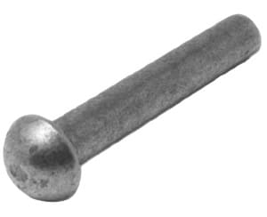
DIN 660 Заклёпки с полукруглой головкой

DIN 661 Заклёпка с потайной головкой
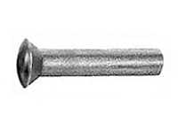
DIN 662 Заклёпка с полупотайной головкой

DIN 674 Заклёпка под молоток с низкой полукруглой головкой

DIN 7337 Заклёпка вытяжная
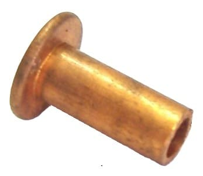
DIN 7338 Заклёпка пустотелая
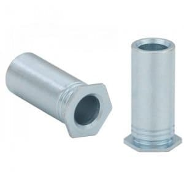
Втулка запрессовочная резьбовая
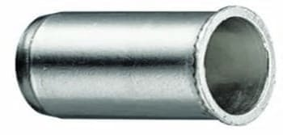
Заклепка гайка гладкая удлиненная МФ
Заклёпка вытяжная DA алюминий/сталь стандартный бортик

Заклёпка вытяжная алюминиевая DA AL-AL с потайным бортиком

Заклёпка вытяжная алюминиевая DA AL-AL с широким бортиком
Заклёпка вытяжная алюминиевая DA AL-AL стандартный бортик

Заклёпка вытяжная глухая закрытая ACB ST-ST

Заклёпка вытяжная глухая комбинированная DA AL-ST

Заклёпка вытяжная глухая нержавеющая SS A2-A2

Заклёпка вытяжная глухая с потайным бортиком DA AL-ST

Заклёпка вытяжная комбинированная DA AL-A2 с широким бортиком

Заклёпка вытяжная комбинированная DA AL-ST с широким бортиком

Заклёпка вытяжная лепестковая DA AL-ST

Заклёпка вытяжная медная со стандартным бортиком DA CU-ST

Заклёпка вытяжная нержавеющая SS A2-A2 с потайным бортиком

Заклёпка вытяжная нержавеющая SS А2-А2 с широким бортиком
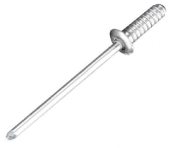
Заклёпка вытяжная рифлёная AL-ST

Заклёпка вытяжная с потайным бортиком DA AL-ST
Заклёпка вытяжная со стандартным бортиком DA AL-A2

Заклёпка вытяжная со стандартным бортиком ISO 16584 Monel-A4

Заклёпка вытяжная сталь-сталь ACB ST-ST с потайным бортиком
Заклёпка вытяжная стальная ACB ST-ST стандартный бортик

Заклёпка вытяжная стальная с широким бортиком ACB ST-ST
Заклёпка вытяжная стандартный бортик SS А2-А2

Заклёпка вытяжная усиленная моноболт St-St
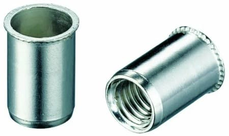
Заклёпка-гайка гладкая с малым фланцем

Заклёпка-гайка гладкая с потайным фланцем 88418

Заклёпка-гайка гладкая с цилиндрическим фланцем ЦФ
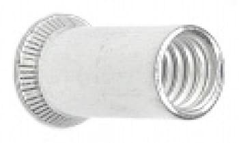
Заклёпка-гайка гладкая удлинённая ПФ

Заклёпка-гайка гладкая удлинённая с цилиндрическим фланцем ЦФ

Заклёпка-гайка глухая гладкая с цилиндрическим фланцем ЦФ

Заклёпка-гайка лепестковая

Заклёпка-гайка полушестигранная МФ

Заклёпка-гайка полушестигранная с цилиндрическим фланцем ЦФ

Заклёпка-гайка рифленая МФ

Заклёпка-гайка рифленая глухая с цилиндрическим фланцем ЦФ

Заклёпка-гайка рифленая с потайным фланцем ПФ
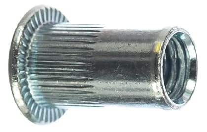
Заклёпка-гайка рифленая с цилиндрическим фланцем ЦФ
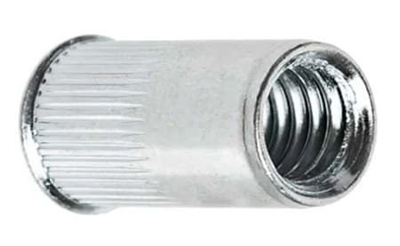
Заклёпка-гайка рифленая удлинённая МФ
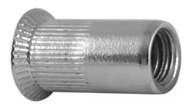
Заклёпка-гайка рифленая удлинённая с потайным фланцем ПФ
Заклёпка-гайка рифленая удлинённая с цилиндрическим фланцем ЦФ
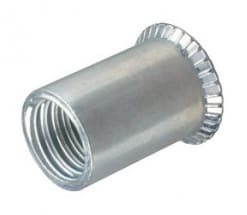
Заклёпка-гайка цилиндрическая ПФ
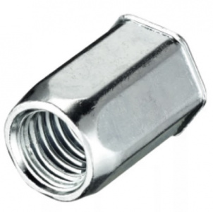
Заклёпка-гайка шестигранная МФ
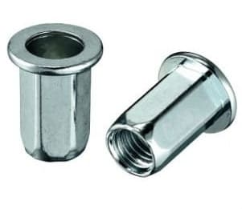
Заклёпка-гайка шестигранная с цилиндрическим фланцем ЦФ

Заклёпка-гайка шестигранная удлинённая МФ

Заклёпки вытяжные

Заклёпки вытяжные RAL DA
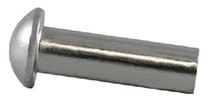
Заклёпки под молоток DIN
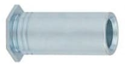